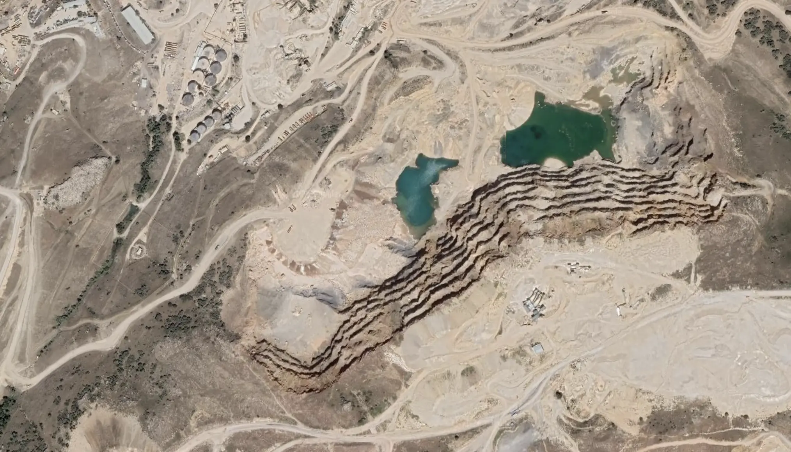
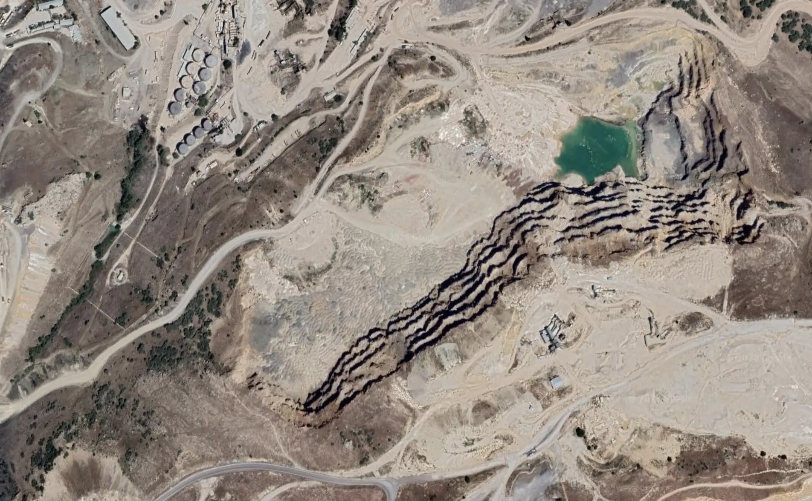
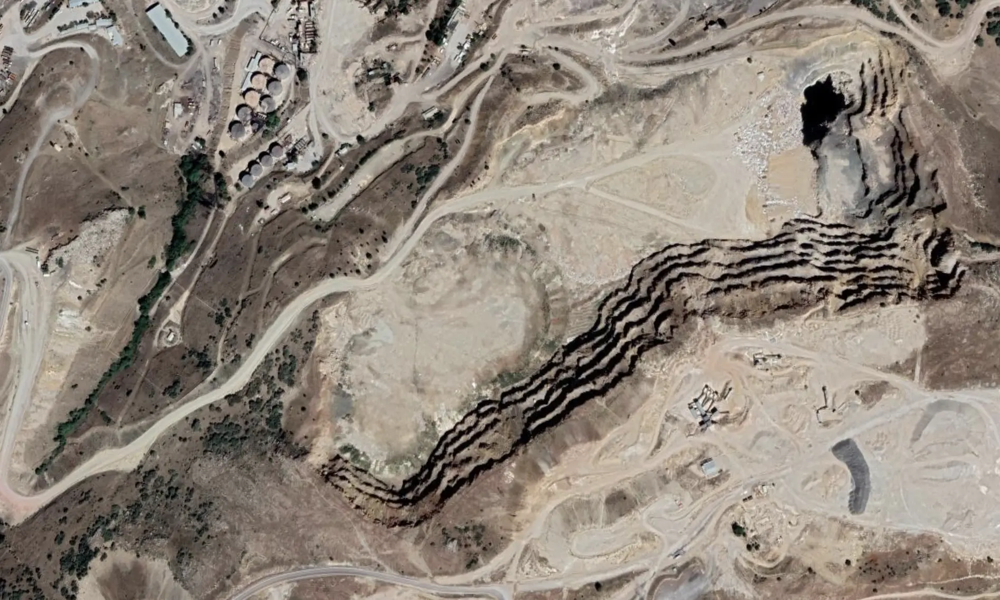
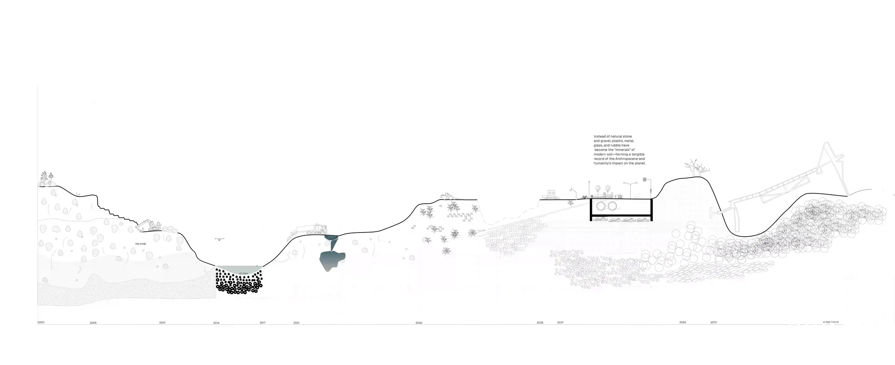

Debris is not a subject or an object, but rather a record of a moment. It is in a constant state of transformation. Unlike "rubble," which implies reusable or identifiable building pieces, debris refers to matter dispersed by violence or disaster. It captures not only physical remnants but also the broader spatial transformation caused by destruction.